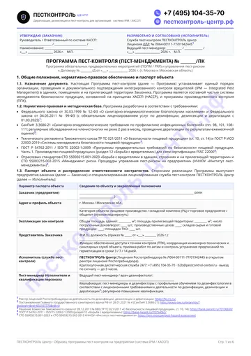
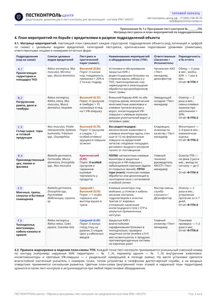
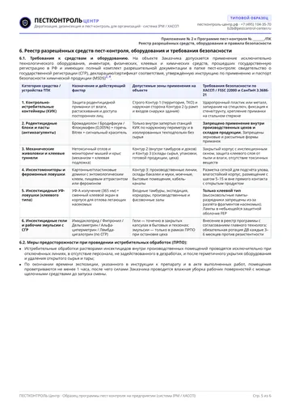
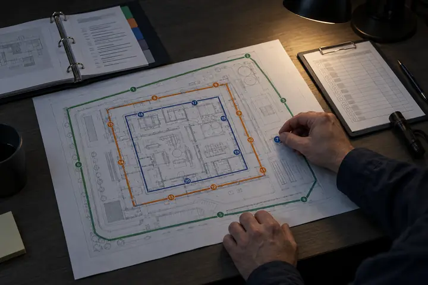
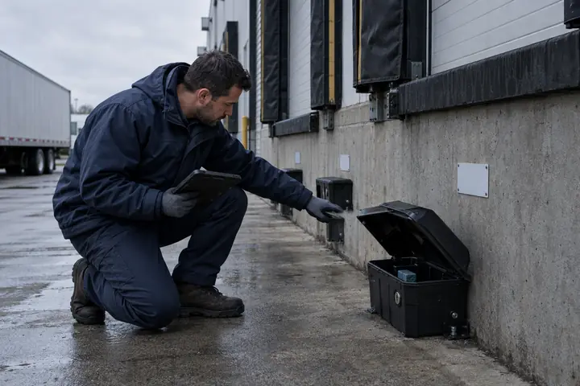

СанПиН 3.3686-21
Пункты 98, 101, 108–111
Обязывает юрлиц проводить регулярные обследования, профилактические и истребительные меры. На пищевых и торговых объектах контроль насекомых — не реже 2 раз в месяц, по грызунам — ежемесячная оценка.
Программа пест-контроля — рабочий документ системы IPM и плана ХАССП: целевые вредители объекта, оценка пест-риска по зонам, схема пронумерованных точек контроля (ТПК), пороги численности и обязанности предприятия и лицензированной службы.
Есть пустой шаблон программы, PDF · обезличенный образец ПЕСТКОНТРОЛЬ Центра
Обезличенный образец рабочей программы ПЕСТКОНТРОЛЬ Центра для пищевого производства, склада, магазина или ресторана. Показывает, как выглядит заполненная форма: титул с грифами утверждения, паспорт объекта, расчёт пест-риска, план мероприятий по зонам, реестр средств и подписи сторон. Рядом — пустой шаблон той же формы без записей.

Стр. 1Титул и паспорт объекта
Стр. 3План мероприятий по зонам
Стр. 5Реестр средств с СГР0 из 5
Отметьте пункты, которые уже выполнены в вашей папке пест-контроля. Если чего-то не хватает — на бесплатном обследовании покажем, что доработать до проверки.
Проверить папку на объектеОбразец показывает форму документа, но инспектор Роспотребнадзора и аудитор торговой сети сверяют программу с реальным цехом. Общие фразы «проводить обработку раз в месяц» без оценки риска, пронумерованных точек и пороговых уровней фиксируются как критическое несоответствие.
СанПиН 3.3686-21
Обязывает юрлиц проводить регулярные обследования, профилактические и истребительные меры. На пищевых и торговых объектах контроль насекомых — не реже 2 раз в месяц, по грызунам — ежемесячная оценка.
ТР ТС 021/2011
Требует внедрения процедур ХАССП, инженерной защиты производственных помещений от проникновения грызунов, насекомых и птиц, а также документального подтверждения мониторинга в контрольных точках.
Раздел 12 ГОСТ
Базовый стандарт предварительных программ (ПОПМ / PRP) для FSSC 22000: назначенный ответственный, документированная программа, целевые вредители, карта детекторов, защита сырья от пестицидов и анализ трендов.
| Критерий проверки | Шаблон без обследования или формальная ППК | Рабочая программа ПЕСТКОНТРОЛЬ Центра |
|---|---|---|
| Привязка к зданию и потокам сырья | Общий текст без учёта рамп, ворот, вентиляции, температурных зон и маршрутов движения продукта | Составляется после очного обследования строений и территории с разбивкой на 3 контура защиты и зоны риска |
| Перечень целевых вредителей | Абстрактная запись «грызуны и бытовые насекомые» | Точный видовой состав до рода и вида под специфику сырья, тары и прилегающей территории |
| Связь с системой ХАССП | Отдельная папка, не связанная с анализом опасностей предприятия | Чёткое разделение постоянных мер ПОПМ (PRP) без остановки цеха и операционных мер ПРПО при превышении порога |
| Точки пест-контроля (ТПК) и лимиты | Нет привязки к типам ловушек и допустимым порогам численности | Сквозная нумерация КИК, живоловок, клеевых мониторов и УФ-ламп с критическими лимитами по каждой зоне |
| Обязанности служб предприятия | Вся ответственность формально переложена на приходящего дезинфектора | Прописан регламент для служб Заказчика: герметизация (пест-пруфинг), санитарный режим, входной контроль партий |
Мы формируем программу на основе санитарного законодательства РФ и отраслевых стандартов пест-менеджмента (СТО 55003215.001-2023 и СТО 55003215.001-2015 НЧНОУ «Институт пест-менеджмента»).
Перечень адресов, корпусов и площадей, номер лицензии ДДД исполнителя. Закрепляются два ответственных лица: представитель Заказчика (координирует работы, допуск и выполнение санитарно-технических предписаний) и пест-менеджер Исполнителя (оценивает качество работы техников, проверяет документацию и ведёт переговоры со службами объекта).
Классификация вредителей, несущих медицинский, хозяйственный или репутационный риск для предприятия:
Анализ вероятности захода и размножения вредителей в каждом подразделении (территория, рампа, склад сырья, цех, моечная, упаковка) с учётом ёмкости среды обитания, внешних факторов и защищённости здания. Каждой зоне присваивается индекс пест-риска, определяющий плотность точек и частоту обходов.
Цветные схемы территории и этажей с местами размещения контрольно-истребительных контейнеров (КИК), механических живоловок, клеевых и феромонных мониторов, следовых площадок и инсектицидных УФ-ловушек. Описывается порядок настенной маркировки, сигнальных лент и сезонного уплотнения точек.
Количественные критерии допустимой численности по каждой зоне (например, 0 грызунов и 0 тараканов в зоне открытого продукта) и алгоритм действий при превышении лимита: от уплотнения мониторинга и ревизии партии до запуска истребительных мер ПРПО в санитарное окно.
Перечень родентицидов, инсектицидов, репеллентов и клеевых средств с номерами свидетельств о госрегистрации (СГР), действующими веществами, дозировками и разрешёнными зонами применения. Включает схему ротации препаратов против резистентности и регламент охраны труда.
График плановых и инспекционных обследований, порядок перезарядки, мойки и дезинфекции станций контроля (не реже 1 раза в месяц), правила выемки и утилизации павших особей, формы объектовых журналов и структура ежемесячного аналитического отчёта с оценкой эффективности и санитарно-техническими предписаниями.
Так составляется программа пест-контроля на предприятии — в том же порядке, что и в шаблоне. Пример заполненной матрицы мероприятий — на странице 3 образца.

На сертификационном аудите ISO 22000 или FSSC 22000 недостаточно показать расставленные ловушки — нужно обосновать, почему в этой зоне выбран именно такой тип контроля и частота проверок.
Пест-риск = Пест-опасность (0…1) × Вероятность ущерба (0…1)
Составляется на основе первичного анализа опасностей и действует непрерывно без остановки производства. Включает инженерно-технические барьеры (сетки, уплотнители, закрытые двери), санитарный режим, наружные приманочные станции КИК по периметру и инструментальный мониторинг нетоксичными ловушками внутри цехов и складов.
Включается для устранения конкретной выявленной опасности, когда отлов на точках контроля превысил допустимый порог. Истребительные обработки инсектицидами или фогация внутри производственных помещений в рамках ПРПО проводятся только как крайняя мера, при полной остановке участка в санитарное окно и с последующей мойкой линий.
Фрагмент Приложения № 1 из образца: шесть типовых зон предприятия с целевыми видами, порогами, точками контроля и ответственными. Для вашего объекта таблица составляется после бесплатного обследования с привязкой к реальным помещениям и номерам точек на схеме.
| Подразделение (код) | Целевые виды вредителей | Пест-риск и порог | Мероприятия и точки ТПК | Ответственные | Сроки и отчёт |
|---|---|---|---|---|---|
| A_1 Прилегающая территория и площадка ТКО |
Серая крыса (Rattus norvegicus), домовая мышь (Mus musculus), полёвки (Microtus spp.), мухи | Высокий (0,64) Порог: 0 жилых нор; поедаемость приманки > 20% — уплотнение КИК |
Закрытые антивандальные КИК с родентицидными блоками на стержнях вдоль забора и у ТКО; дезинсекция мусоросборников; покос травы и вывоз отходов | Заказчик: нач. АХО. Исполнитель: пест-менеджер, дезинфектор |
Обход — 2 раза в месяц; мойка КИК — 1 раз в месяц. Отчёт Ф-ТПК-1 |
| B_2 Погрузочная рампа, доки и тамбуры |
Серая и чёрная крыса (Rattus spp.), домовая мышь, мухи (Musca domestica), осы | Высокий (0,72) Порог: 0 грызунов в тамбуре; > 15 насекомых/нед. на УФ-лампу — ревизия ворот |
Контур КИК снаружи у доков; механические живоловки и клеевые туннели внутри у ворот; инсектицидные УФ-ловушки; проверка уплотнителей и завес | Заказчик: зав. складом. Исполнитель: пест-менеджер |
Плановый осмотр — 2 раза в месяц; замена экранов УФ-ламп при заполнении > 50%. Отчёт Ф-ТПК-2 |
| C_3 Склад сырья, упаковки и готовой продукции |
Домовая мышь (Mus musculus), пищевая моль и огнёвки (Pyralidae), хрущаки, мукоеды | Высокий (0,70) Порог: 0 грызунов и погрызов; > 2 особей огнёвки в ловушке — ревизия партии |
Без ядов: многоместные живоловки и клеевые мониторы с шагом 6–12 м; феромонные ловушки на вредителей запасов; входной осмотр паллет от поставщиков | Заказчик: кладовщик, служба качества. Исполнитель: пест-менеджер |
Мониторинг — 2–4 раза в месяц; ежемесячная оценка. Отчёт Ф-ТПК-3 |
| D_4 Производственный цех, линии и фасовка |
Тараканы (Blattella germanica), муравьи (Formicidae), мухи, дрозофилы, мышь домовая | Критический (0,85) Порог: 0 особей грызунов и тараканов (нулевая терпимость у продукта) |
ПОПМ: клеевые мониторы в защитных корпусах и УФ-ловушки с небьющимися лампами. ПРПО (при очаге): точечное нанесение геля или обработка в санитарное окно | Заказчик: гл. технолог, инженер ХАССП. Исполнитель: пест-менеджер |
Осмотр ТПК — не реже 2 раз в месяц; выезд по сигналу — за 3 часа. Отчёт Ф-ТПК-4 |
| E_5 Моечная, трапы, санузлы и бытовые зоны |
Тараканы, плодовые мушки (Drosophila spp.), бабочницы (Psychodidae), чешуйницы | Средний / Высокий (0,55) Порог: > 1 особи таракана или выплод в трапе — зачистка и барьер |
Клеевые мониторы под мойками, у стояков и кабель-каналов; контроль гидрозатворов и чистоты трапов; гелевые приманки с СГР в закрытых точках | Заказчик: мастер смены, клининг. Исполнитель: дезинфектор |
Осмотр — 2 раза в месяц; устранение протечек и жира за 3–7 дней. Отчёт Ф-ТПК-5 |
| F_6 Техподполье, венткамеры, кабель-каналы и кровля |
Серая и чёрная крыса (Rattus spp.), комары (Culex pipiens), сизый голубь (Columba livia) | Средний (0,45) Порог: 0 следов крыс у кабельных вводов; 0 гнёзд птиц на рампах |
Закрытые КИК во влажных техподпольях; проверка сеток с ячейкой не более 5×5 мм на вентшахтах и продухах; защита карнизов рамп от птиц | Заказчик: гл. инженер. Исполнитель: пест-менеджер |
Плановая проверка — 1–2 раза в месяц. Отчёт Ф-ТПК-6 |
Методическая основа структуры плана мероприятий: СТО 55003215.001-2023 и СТО 55003215.001-2015 НЧНОУ «Институт пест-менеджмента» (ipm.moscow), адаптированные под договорной регламент ПЕСТКОНТРОЛЬ Центра.
Аудиторы FSSC 22000 и торговых сетей проверяют не только акты подрядчика, но и выполнение предприятием своих санитарно-технических обязанностей. В рабочей программе эти перечни разделены.

Работы выполняют пест-менеджеры и дезинфекторы с профильной подготовкой по дезинфектологии:
Внутренние превентивные условия, которые координирует назначенный представитель Заказчика:
Программа определяет, что и как записывается: журнал пест-контроля (учёт осмотров точек), акты применения средств и аналитический отчёт. Выполнение программы проверяют на четырёх уровнях.
При каждом визите по каждой пронумерованной точке записывают дату, номер и тип устройства, его состояние и доступность, вид и число вредителей или следов (помёт, погрызы, оотеки), поедаемость приманки, замену клеевой пластины и подпись специалиста.
Указываются торговые наименования пестицидов и нетоксичных средств, номера СГР, действующие вещества, дозировки, конкретные места и методы нанесения, целевой вредитель и точное время проведения работ.
Обобщает данные визуального и инструментального осмотра и опроса персонала. Содержит тренды по критическим точкам, рекомендации по участкам со сроками исполнения и факты снижения эффективности ловушек по вине персонала.
Образец и шаблон на этой странице — бесплатно и для ориентира. Рабочую программу под ваш объект составляем после осмотра: она входит в запуск регулярного обслуживания по договору.
| Тип объекта | Что входит в программу и абонентское ведение | Ориентир стоимости |
|---|---|---|
| Кафе, ресторан, пищеблок | Программа пест-контроля для ХАССП и ППК, схема ТПК, контроль грызунов и насекомых (1–2 визита в месяц), журнал и акты | от 3 500 ₽/мес |
| Магазин, супермаркет | Программа и схема точек по залу, складу и дебаркадеру, 1–2 визита в месяц, полный комплект документов с СГР | от 3 500 ₽/мес |
| Склад до 1 000 м² | Оценка пест-риска, программа и схема контуров защиты (периметр, доки, хранение), плановый мониторинг и отчётность | от 4 500 ₽/мес |
| Пищевое производство, РЦ, завод | Развёрнутая программа ПОПМ / ПРПО под FSSC 22000, ISO 22000 и сети, многоконтурная схема ТПК, анализ трендов и предписания | после бесплатного выезда |
Выезд пест-менеджера и первичное обследование — бесплатно. Проект договора со структурой программы и расчётом точек направляем в течение 1 часа после осмотра. Старт работ на объекте — от 3 часов, внеплановый выезд по сигналу — в течение 3 часов.
Проводим ревизию действующей программы, схемы точек и журналов прежнего исполнителя, устраняем замечания под актуальные нормы СанПиН 3.3686-21 и запускаем обслуживание с даты окончания старого договора. Работаем с НДС и без НДС, по ЭДО и на бумаге.
В общей программе производственного контроля (ППК) борьбе с вредителями обычно отведена одна строка с кратностью обработок. Для пищевых производств, складов, торговых сетей и общепита, работающих по принципам ХАССП (ТР ТС 021/2011, ГОСТ Р ИСО 22000-2019, FSSC 22000), этого недостаточно: раздел 12 ГОСТ Р 54762-2011 требует документированной программы с перечнем целевых видов, оценкой пест-риска по зонам, картой пронумерованных точек контроля, пороговыми лимитами и анализом трендов.
Программу разрабатывает профильный специалист службы пест-контроля (пест-менеджер, врач-дезинфектолог или биолог со специальной подготовкой) от организации, имеющей действующую лицензию Роспотребнадзора на дезинфекцию, дезинсекцию и дератизацию (обязательна с 1 марта 2025 года). Документ подписывается двумя сторонами — исполнителем и ответственным представителем заказчика.
На этой странице образец программы пест-контроля можно скачать бесплатно в PDF — вместе с пустым шаблоном той же формы. Образец обезличен и показывает форму документа: паспорт объекта, целевые виды вредителей, расчёт пест-риска, план-схему точек, план мероприятий, реестр средств и подписи сторон. Для проверки Роспотребнадзора или аудита торговой сети шаблон заполняют по реальному объекту: без обследования, привязки к помещениям и номеров точек на схеме он остаётся формальной бумагой.
Да, рядом с образцом есть шаблон в PDF с теми же разделами и приложениями, но без записей: поля для заполнения отмечены подчёркиванием, таблицы целевых видов, плана мероприятий и реестра средств пустые, шаблон можно распечатать. Паспорт объекта и сведения об ответственных предприятие может внести само. Оценку пест-риска, план-схему точек, пороги численности и перечень средств заполняет специалист по пест-контролю после осмотра — этого ждут аудиторы ХАССП и стандарты IPM.
Обычный график ДДД фиксирует только даты приезда дезинфектора для раскладки приманки или опрыскивания. Программа по системе IPM (интегрированного пест-менеджмента) управляет риском: связывает инженерную герметизацию здания, санитарные обязанности персонала, нетоксичный мониторинг внутри цехов, количественные пороги численности и применение пестицидов строго по показаниям.
Плановая ревизия проводится не реже 1 раза в год вместе с анализом системы ХАССП со стороны руководства. Внепланово программа и план-схема точек обновляются при перепланировке или реконструкции цехов, запуске новых линий, смене сырья, а также при выявлении нового вида вредителя или устойчивом росте отлова в критических точках.
В рабочую папку входят: (1) утверждённая программа с оценкой пест-риска и планом мероприятий; (2) договор на обслуживание и копия лицензии Роспотребнадзора № Л064-00111-77/01942445; (3) сведения о квалификации специалистов; (4) цветные план-схемы здания и территории с точками контроля; (5) объектовый журнал осмотров ТПК и акты работ; (6) реестр средств с копиями СГР, инструкциями и паспортами безопасности; (7) ежемесячные отчёты с трендами и предписаниями.
Программа — документ планирования: что, где, какими средствами и как часто контролируется, кто отвечает и какие пороги численности допустимы. Журнал пест-контроля — документ учёта: при каждом визите в нём фиксируют состояние каждой пронумерованной точки, найденных вредителей и следы, расход приманки и выполненные работы. Форму журнала утверждают в программе, а записи в журнале подтверждают, что программа выполняется.
Обследование объекта занимает 1–3 часа. Проект договора с расчётом точек и структурой программы мы направляем в течение 1 часа после осмотра, а выезд на установку и маркировку оборудования возможен от 3 часов. При заключении абонентского договора разработка программы, схемы точек и журналов входит в запуск обслуживания.
Бесплатно приедем на предприятие в Москве или Московской области, проведём оценку пест-риска, проверим текущую папку документов и подготовим проект договора с программой за 1 час.